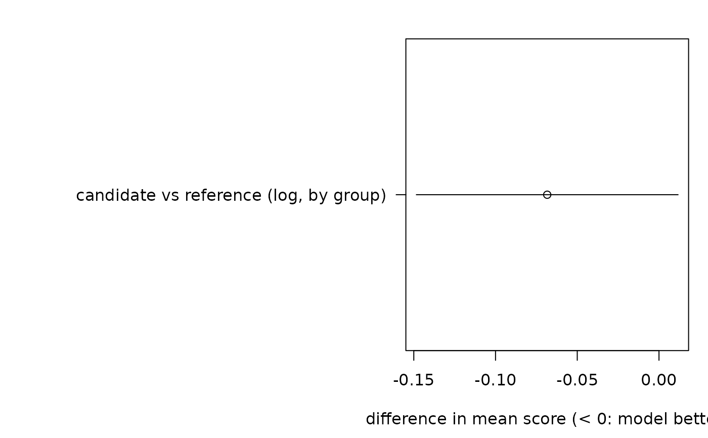

Plot model comparisons with their intervals
Source:R/ilm_plot_diagnostics.R, R/zzz-iml-aliases.R
ilm_plot_compare.RdDraws each comparison from ilm_compare() as its mean score difference with a
confidence interval, against a line at zero. An interval that excludes zero
is a difference the data can tell apart. It is built from the same standard
error and degrees of freedom as the comparison's own test: clustered,
row-wise or Diebold-Mariano.
Arguments
- x
A comparison from
ilm_compare().- level
Confidence level of the intervals.
Value
The data behind the plot, invisibly: a data frame with one row per
comparison, giving its label, the mean score difference, the interval's
lower and upper limits, and by, how its standard error was computed.
Reading the plot
Each row is one model compared with the reference, labelled with the score, how the standard error was computed and, for forecasts, the horizon.
A point left of the dashed line at zero means the model scored better than the reference (scores are losses); right of it, worse.
If the row's interval lies wholly on one side of the line, the data tell the two models apart at the plot's
level. If it crosses the line, they do not: the comparison cannot say which model predicts better.A wide interval means the comparison has little to go on: with a clustered or Diebold-Mariano standard error, that is usually too few groups, folds or origins.
See also
ilm_compare(), whose result this plots; ilm_plot_horizon() for
scores by horizon.
Examples
set.seed(1)
g <- rep(1:10, each = 5)
a <- data.frame(group = g, log = rnorm(50, 1.2) + rnorm(10)[g])
b <- data.frame(group = g, log = a$log - 0.1 + rnorm(50, 0, 0.2))
ilm_plot_compare(ilm_compare(reference = a, candidate = b, by = "group"))
